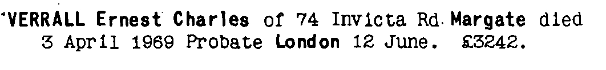
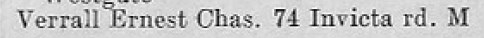
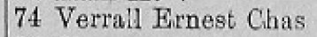
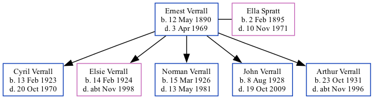

Ernest Charles Verrall 1890 - 1969
[ Home ] | [ Calendar ] | [ Surnames Index ] | [ Family History ], Ernest Verrall, the husband of Ella Spratt (the great-aunt of Nigel Horne), was born in Doddington, Kent, England on May 12, 1890<span class="citation">1,2,3,4,5,6,7</span> and married Ella (a charwork with whom he had 5 children: <a href="I1460.html">Cyril Ernest</a>, <a href="I1948.html">Elsie Amy</a>, <a href="I2230.html">Norman Charles</a>, <a href="I429.html">John Leslie</a> and <a href="I2231.html">Arthur George</a>) in Thanet, Kent, England around May 1922<span class="citation">9</span>.</p><p>Ernest spent all of his life in Kent, England. Throughout his life, he lived in several places around the county: at his birthplace in 1891<span class="citation">1</span>; Minster in Thanet in 1901<span class="citation">2</span> and on Apr 2, 1911<span class="citation">3</span>; and on 74 Invicta Road, Margate on Sep 29, 1939<span class="citation">4</span>, in 1955<span class="citation">10</span>, in 1965<span class="citation">11</span> and in 1969. <p>He died on Apr 3, 1969 in Margate, Kent<span class="citation">6,8</span>.
Children
- Cyril Ernest was born on Feb 13, 1923
- Elsie Amy was born on Feb 14, 1924
- Norman Charles was born on Mar 15, 1926
- John Leslie was born on Aug 8, 1928
- Arthur George was born on Oct 23, 1931
Citations
- 1891 England Census Online publication - Provo, UT, USA: The Generations Network, Inc., 2005.Original data - Census Returns of England and Wales, 1891. Kew, Surrey, England: The National Archives of the UK (TNA): Public Record Office (PRO), 1891. Data imaged from The National
- 1901 England Census Online publication - Provo, UT, USA: The Generations Network, Inc., 2005.Original data - Census Returns of England and Wales, 1901. Kew, Surrey, England: The National Archives of the UK (TNA): Public Record Office (PRO), 1901. Data imaged from the National
- 1911 England Census Online publication - Provo, UT, USA: Ancestry.com Operations, Inc., 2011.Original data - Census Returns of England and Wales, 1911. Kew, Surrey, England: The National Archives of the UK (TNA), 1911. Data imaged from the National Archives, London, England.
- 1939 Register - Findmypast (was the head of the household)
- England & Wales deaths 1837-2007 - Findmypast
- England & Wales, Death Index: 1984-2005 Online publication - Provo, UT, USA: The Generations Network, Inc., 2007.Original data - General Register Office. England and Wales Civil Registration Indexes. London, England: General Register Office. © Crown copyright. Published by permission of the Cont
- England & Wales, FreeBMD Birth Index, 1837-1915 Online publication - Provo, UT, USA: The Generations Network, Inc., 2006.Original data - General Register Office. England and Wales Civil Registration Indexes. London, England: General Register Office. © Crown copyright. Published by permission of the Cont
- England & Wales Government Probate Death Index 1858-2019 - Findmypast
- England & Wales marriages 1837-2008 - Findmypast
- 1955 Kelly's Thanet Directory
- 1965 Kelly's Thanet Directory
Media
Ernest Verrall - probate

1955 Kelly's Thanet Directory

1965 Kelly's Thanet Directory

England & Wales deaths 1837-2007 - BMD/D/1969/2/AZ/001205/054
England & Wales marriages 1837-2008 - BMD/M/1922/2/AZ/001265/061
England & Wales births 1837-2006 - BMD/B/1890/2/AZ/000580/121
1939 Register Transcription - TNA-R39-1756-1756B-015-18
1939 Register Transcription - TNA-R39-1756-1756B-015-17
1939 Register - TNA/R39/1756/1756B/015/16
England & Wales Government Probate Death Index 1858-2019 - GBOR/GOVPROBATE/C/1969-1969/00226009
Family Tree
Generated by Ged2Site. Last updated on Jul 20, 2025